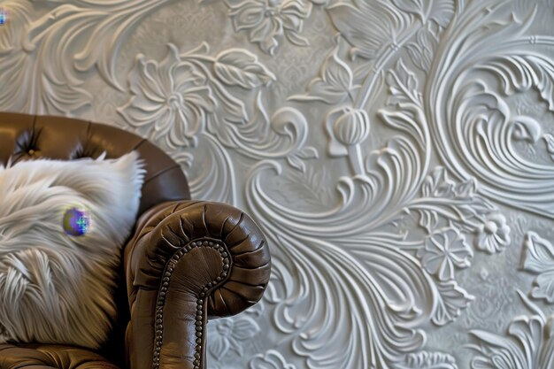
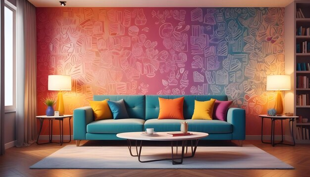

.jpg)
बनावट के साथ खेलें, गहराई और रुचि जोड़ने के लिए
एक अच्छे डिज़ाइन वाले कमरे में केवल रंग नहीं होते—उसमें बनावट भी होती है। विभिन्न बनावटों का मिश्रण एक स्थान को अधिक गतिशील और परतदार बना सकता है। उदाहरण के लिए, एक मखमली सोफा को एक चिकनी धातु की कॉफी टेबल और एक शगी ऊन के गलीचे के साथ मिलाएं। या, मुलायम लिनन के पर्दों के साथ एक खुरदरे लकड़ी के बेंच को जोड़ें। इस तरह की बनावट का विपरीत दृश्यात्मक रुचि जोड़ता है और कमरे को सपाट महसूस होने से रोकता है। इसके अलावा, कुशन, थ्रो, और गलीचों जैसी बनावट वाली एक्सेसरीज़ का उपयोग करके आप कमरे के लुक और फील को आसानी से अपडेट कर सकते हैं।
- टेक्सचर को परतों में सजाना

- मिलाएं और मिलाएं: विभिन्न टेक्सचर को मिलाकर दृश्य रुचि बढ़ाएं। उदाहरण के लिए, एक चिकना लेदर सोफा को एक मुलायम ऊन के गलीचे के साथ मिलाएं, या एक सपाट ग्लास टेबल को एक खुरदरे लकड़ी के टुकड़े के साथ जोड़ें।
- परतों में कपड़े: विभिन्न कपड़े जैसे कि वेलवेट तकियों को लिनेन सोफे पर या रेशमी परदे को कॉटन बेडस्प्रेड पर इस्तेमाल करें, जिससे एक समृद्ध और परतदार प्रभाव बने।
- टेक्सचर और रंग

- विरोधाभास: उच्च-विरोधाभासी टेक्सचर आर्किटेक्चरल फीचर्स और डिज़ाइन तत्वों को प्रमुख बना सकते हैं। उदाहरण के लिए, मैट दीवार की फिनिश चमकदार मेटल लाइट फिटिंग को उभार सकती है।
- एकरंगी योजना: एक ही रंग योजना में विभिन्न टेक्सचर गहराई जोड़ सकते हैं बिना जगह को भरे बिना। सफेद दीवारों, सफेद ऊन के गलीचे, और सफेद लिनन के परदों वाले कमरे में परिष्कार और शांति का एहसास होगा।
- दीवारों पर टेक्सचर

- पेंट की चमक: दीवारों की दृश्य टेक्सचर को बदलने के लिए मैट, सैटिन, या ग्लॉसी पेंट्स का उपयोग करें। मैट फिनिश लाइट को सोखती है, जबकि ग्लॉसी फिनिश उसे परावर्तित करती है, जिससे विभिन्न परतें बनती हैं।
- वॉलपेपर और पैनल:टेक्सचर्ड वॉलपेपर, जैसे ग्रासक्लॉथ या एम्बॉस्ड पैटर्न, और 3D वॉल पैनल सपाट सतहों को गहराई और आयाम जोड़ सकते हैं।
- फर्नीचर और सजावट
.jpg)
- फर्नीचर विकल्प: ऐसे फर्नीचर चुनें जिनमें विभिन्न टेक्सचर हों, जैसे वेलवेट आर्मचेयर, रीक्लेइम्ड लकड़ी की कॉफी टेबल, या मेटल साइड टेबल।
- सजावटी सामान: विविन्न टेक्सचर वाले सजावटी सामान, जैसे बुनाई वाले बास्केट, सिरेमिक वासे, या ग्लास स्कल्प्चर्स, शामिल करें ताकि दृश्य रुचि और स्पर्श गुणवत्ता बढ़ सके।
- फर्श

- क्षेत्र गलीचे: कमरे के विभिन्न क्षेत्रों को परिभाषित करने और नीचे की ओर आराम जोड़ने के लिए विभिन्न टेक्सचर वाले गलीचों का उपयोग करें, जैसे शैग, जूट, या वॉवन।
- मिश्रित सामग्री:हार्डवुड को टाइल या पत्थर के साथ मिलाकर एक गतिशील फर्श व्यवस्था बनाएं।
- टेक्सचर वाले सजावटी सामान

- तकिए और चादर: ये टेक्सचर जोड़ने के आसान तरीके हैं। विभिन्न सामग्री जैसे फॉक्स फर, निट्स, या मेटलिक फैब्रिक में तकिए चुनें।
- परदे और असबाब: टेक्सचर्ड परदे और असबाब वाले फर्नीचर कमरे के समग्र स्पर्श अनुभव में महत्वपूर्ण योगदान दे सकते हैं।
- रोशनी और परावर्तन

- परावर्तक सतहें: ग्लास, मेटल, या पोलिश्ड स्टोन जैसे सामग्री का उपयोग करें ताकि प्रकाश को परावर्तित किया जा सके और गहराई का एहसास हो सके।
- लाइटिंग फिटिंग्स: लाइटिंग फिटिंग्स में विभिन्न टेक्सचर, जैसे कि क्रिस्टल चैंडेलियर या मैट मेटल पेंडेंट, कमरे के मूड और टेक्सचर पर असर डाल सकते हैं।
- आर्किटेक्चरल तत्व
.jpg)
- कॉटिंग और ढलाई: टेक्सचर्ड मोल्डिंग्स या वैनस्कोटिंग से आर्किटेक्चरल रुचि बढ़ सकती है और बड़ी दीवारों को विभाजित किया जा सकता है।
- अग्नि स्थान और विशेष दीवारें: टेक्सचर्ड पत्थर या ईंट के फायरप्लेस कमरे में फोकल पॉइंट बन सकते हैं, जिससे गहराई और चरित्र बढ़ता है।
- सफलता के लिए टिप्स
- संतुलन: टेक्सचरों का संतुलन बनाए रखें ताकि जगह को अधिक भरा हुआ न लग सके। बहुत अधिक भिन्न टेक्सचर दृश्य अव्यवस्था पैदा कर सकते हैं।
- आकार और अनुपात: कमरों के आकार के अनुसार टेक्सचर के स्केल पर विचार करें। बड़े कमरे विभिन्न टेक्सचरों को अच्छे से समेट सकते हैं, जबकि छोटे कमरे में कम टेक्सचर वाला approach बेहतर हो सकता है।
- संगति:कक्ष के कुल रंग योजना और शैली के साथ टेक्सचर को सामंजस्यपूर्ण बनाकर एक सुसंगत डिज़ाइन बनाए रखें।